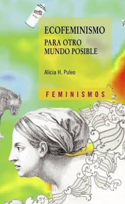

Ecofeminismo para otro mundo posible
Reseña por Jorge I. Zuluaga

Ver reseña en GoodReads (necesita cuenta)
No hay prácticamente ningún párrafo de este texto en el que no hayamos encontrado algo relevante, algo nuevo. Tal vez sea por nuestro relativamente reciente descubrimiento de la materia (comenzamos a leer de feminismos apenas hace unos meses, aunque se escriben libros sobre el tema desde hace ya 2 siglos y medio). O tal vez sea, de verdad, porque nunca ha sido más relevante el Ecofeminismo como lo es en el momento presente de la historia.
El libro no es precisamente fácil de leer. No esperaba tampoco que lo fuera. Pero es precisamente por algunos pasajes medio impenetrables para el lector o la lectora interesada que no tiene formación filosófica (como es mi caso por ejemplo) que no le puse 5 estrellas. Y es que Alicia Puleo, su autora, es una competente filósofa que no se viene con simplificaciones cuando de discutir los temas centrales del ecofeminismo se trata: la feminización de la Naturaleza, el mito de la razón, la teoría queer y su conexión con la diversidad natural, el ecologismo social y el ecofeminismo, la educación ambiental no androcéntrica, el sexismo en la explotación animal, la universalidad del cuidado, etc.
El capítulo que más disfrute fue el dedicado a los animales, "Los animales en la ética ecofeminista".
Una de las cosas que más disfruto de leer de feminismos es la mirada alternativa, la mirada femenina, a temas, que aunque aunque han sido tratados ampliamente por otras formas de pensamiento, se abordan desde perspectivas para mi enteramente nuevas (pero solo para mí, sé que esto tiene su historia). Esas nuevas perspectivas, en este caso por ejemplo sobre los animales, me han ayudado a enriquecer mi relación con los animales con los que convivo, a verlos y tratarlos de forma distinta. Naturalmente, el capítulo no se reduce a exponer una revisión feminista del animalismo. Fue impresionante entender el papel que han jugado los animales, el lenguaje sobre los animales, en el patriarcado; desde el uso de epítetos animales (zorra, perra, gallina, etc.) para reducir a las mujeres a una condición "inferior", más cercana al mundo Natural, hasta el papel de los animales con los que convivimos como individuos en los que muchas mujeres a lo largo de la historia dirigieron sus esfuerzos de cuidado y su amor, al carecer de la debida retroalimentación entre los mismos humanos, especialmente los hombres.
Si hay algo que el ecofeminismo tiene para decir que me interesa particularmente por mi profesión, es todo aquello que tiene que ver con la ciencia y con el complejo técnico científico, como aprendí que lo llaman las teóricas y teóricos sociales.
Después de leer "Ecofeminismo", pero también por otras lecturas que he hecho de feminismos, he empezado a reconocer los graves defectos que ha tenido y sigue teniendo el proyecto científico del que hago parte. Desde su concepción original como proyecto de dominación y manipulación de la Naturaleza, como si la Naturaleza fuera algo separado de nosotros mismos. Esta concepción, que aunque hoy se ve como arcaica sigue viva entre los profesionales de la ciencia y la técnica (confieso con vergüenza que sostuve esta posición hasta hace muy poco) es, en buena parte, causante de la crisis medio ambiental.
La ciencia ha sido también "complice" de la perpetuación de los sistemas de poder patriarcal. Por décadas, la paleontología desplazo a la mujer en un lugar secundario en la historia de nuestra especie; la biología ha ayudado a sostener prejuicios esencialistas en los que la mujer ocupa el rol social que su biología determina; la medicina ha excluido (y sigue excluyendo) sin mucha justificación de la investigación farmacológica a las mujeres, con terribles consecuencias para la mitad de la humanidad.
Nada como esta corriente del feminismo, el ecofeminismo, para ser conscientes de estos terribles efectos de la ciencia sobre la historia social.
Aunque muchas de las cosas arriba pueden sonar a un revisionismo posmoderno, a un relativismo que busca nivelar todos los discursos sobre la naturaleza con la ciencia y sus impresionantes logros intelectuales, nada más lejos de la síntesis y la crítica que esboza Alicia Puleo en este libro. También pasan por sus páginas las posturas, los autores y autoras posmodernas para ser evaluadas y criticadas a fondo.
Leyendo de feminismos he conocido el término "deconstrucción". Aunque sé de que se trata, todavía no entiendo muy bien cómo "luce" una mujer o un hombre deconstruido y no sé si antes de morirme conseguiré ese ideal. Lo que si sé es que la lectura de libros como "Ecofeminismo" me hacen un ser humano, sino mejor, al menos más consciente de los problemas que aborda el feminismo.
Lo he dicho ya muchas veces (lo hago en cada reseña de un nuevo libro de feminismo que leo) y ya me voy volviendo cansón, pero no me considero feminista (y no se si pueda llegar a serlo) pero si puedo decirles que me ha cambiado leer de feminismos.
Le recomiendo a todas y todos, a las y los que aspiren o no al ideal de la deconstrucción, que lean más de feminismos.